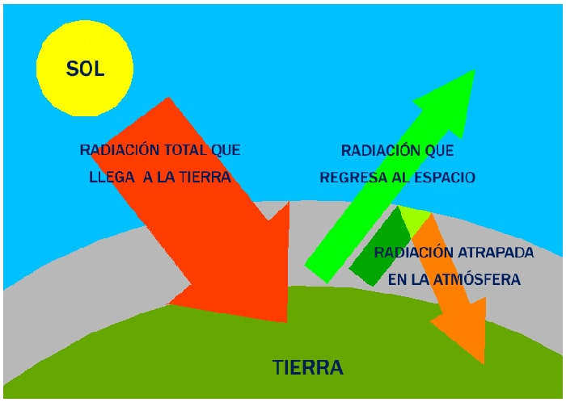

Concepto
El efecto invernadero se define como un fenómeno natural por el que unos gases determinados que componen la atmósfera parte de la energía solar reflejada por el suelo, absorbiéndola y transformándola en un movimiento molecular interno que produce un aumento de la temperatura
Causas del efecto invernadero
Son varias las causas que han intensificado las emisiones de GEI y, por tanto, del efecto invernadero, entre las que se encuentran:
1. La combustión fósil, de biomasa y de residuos.
2. La producción y uso de aerosoles que tienen una gran influencia en el tiempo de vida de las nubes y en la precipitación, que se componen de vapor de agua (gas GEI) que refleja la luz solar enfriando el planeta.
3. Cambios en los usos del suelo como la tala y la quema de bosques (ej: Amazonia) para combustión alterando el albedo superficial.
4. Algunas actividades agrarias como la fermentación entérica como consecuencia del proceso digestivo de los herbívoros, descomposición en condiciones anaerobias (sin oxígeno) del estiércol generado por especies pecuarias o los cultivos de arroz bajo riego.
5. El tratamiento anaerobio de aguas residuales domésticas e industriales.
6. La fundición del aluminio, la fabricación de semiconductores y la transmisión y distribución de energía eléctrica, emitiendo los gases GEI: PFCs y SF6.
Consecuencias del efecto invernadero
El efecto invernadero conlleva un cambio climático en cuanto al aumento de la temperatura global. Desencadena colapsos en las corrientes marinas, en los movimientos atmosféricos y en las dinámicas terrestres en general como es el aumento del nivel del mar, desplazamientos de especies, desaparición de especies, cambios en el ciclo hidrológico, deshielo de los polares, etc.
Además, según el informe de la Organización Mundial de la Salud (OMS), el efecto invernadero ha potenciado los casos de malaria, salmonelosis, diarreas causando deshidratación en los niños y otras infecciones intestinales.
Desde 1750, se estima que las actividades humanas han aumentado el calentamiento global con un forzamiento radiactivo de 1,6 W/m2.
¿Cuáles son los gases de invernadero?
Los gases en la atmósfera que absorben la radiación infrarroja procedente de la Tierra o radiación saliente son conocidos como Gases de Efecto Invernadero (GEI). Entre ellos se encuentran el dióxido de carbono, el vapor de agua, el óxido nitroso, el metano y el ozono. Además, hay una serie de GEI artificiales generados por el ser humano, como los halocarbonos (como los CFCs, HCFCs, HFCs y los PFCs) y otras sustancias con cloro y bromo, regulados por el Protocolo de Montreal, a excepción de HFCs, PFCs y SF6.
Para evitar el calentamiento global es necesario reducir la emisión de gases de efecto invernadero. La mejor manera es apostar por las energías renovables, que generan electricidad limpia sin dañar el medio ambiente ni verter polución al aire. Además, ayudan a preservar los océanos y los bosques, los sumideros de carbono naturales que absorben parte del dióxido de carbono.
Vídeos informativos fáciles de entender y de corta duración: